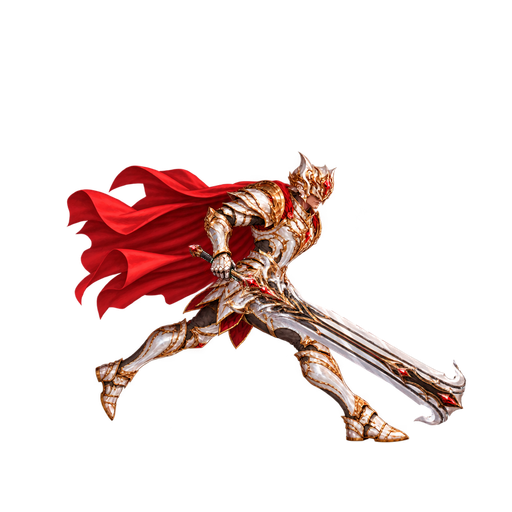
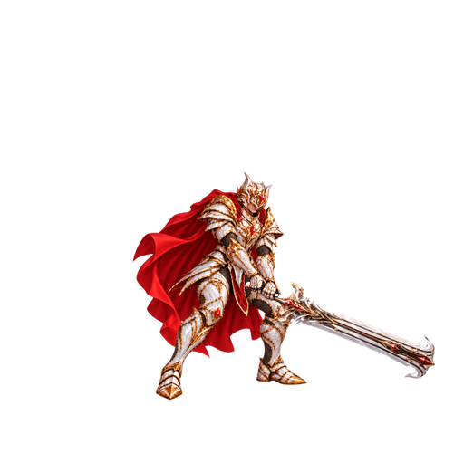
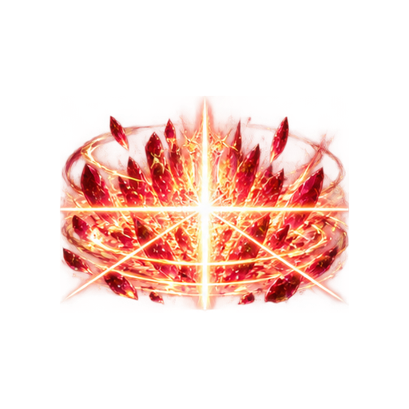

폭발적인 돌진
무게 중심을 낮추고 단숨에 거리를 좁힙니다. 붉은 잔상과 지면광이 가속부터 착지까지 이어집니다.

CRIMSON · SILVER · GOLD
SSS리미티드
홍련의 질주.
전장을 가르는 종결의 일격.
두 손으로 대검의 무게를 모아,
내려찍는 일격과 결정 폭쇄로 전장을 압도합니다.
 VALTER · SSS LIMITED
VALTER · SSS LIMITEDBATTLE REHEARSAL
공격·스킬 공통: 두손 내려찍기
이펙트 96프레임 · 승인 대검 고정
대시 · 기본 강격 · 홍련 강격 · 채택 모션 · 심판 · 방벽 · 궁극기
전장과 스프라이트를 불러오는 중입니다.
DRAWN MOTION · DRAWN VFX
무게 중심을 낮추고 단숨에 거리를 좁힙니다. 붉은 잔상과 지면광이 가속부터 착지까지 이어집니다.

한손 대기에서 두손 파지로 전환하고, 머리 위로 들어 올린 대검을 강하게 내려찍습니다. 기본 공격과 모든 스킬이 채택된 동일 모션을 사용합니다.

백열의 참격, 금빛 충격파와 붉은 결정이 연속으로 터집니다. 거대한 충돌 뒤에도 파편과 잔광이 남습니다.
